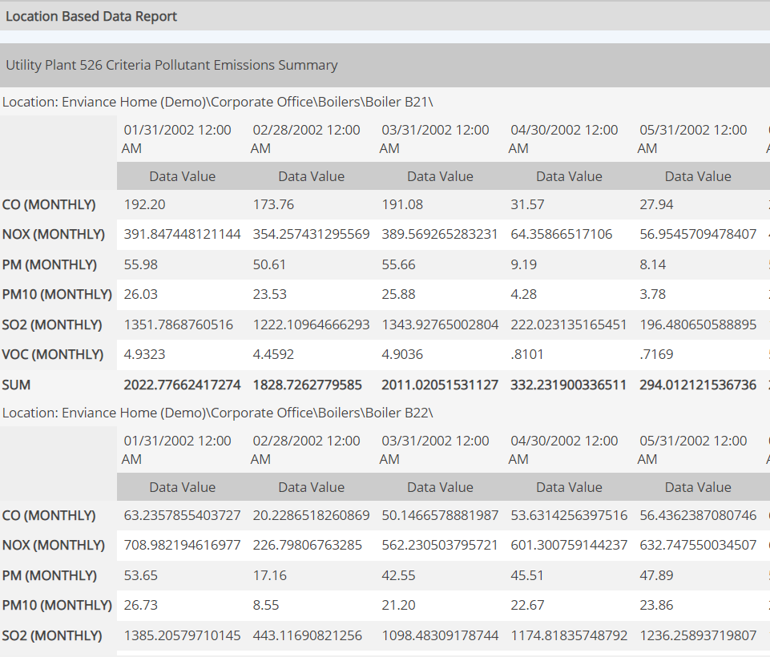

For a Data Report, you can choose the following display options. The options are available as checkboxes in the General Report Description section.
Switch Rows and Columns: Reverses display of rows and columns. See the following examples.
Data Report grouped by Location, default display:
Rows and columns switched:

Display sub-columns with no data: Subcolumns with no data are normally not displayed. Choose this option, to display null data sub-columns.